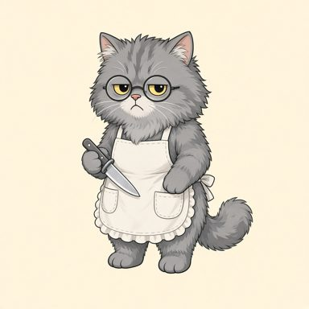
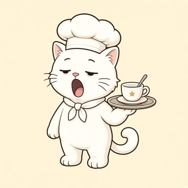
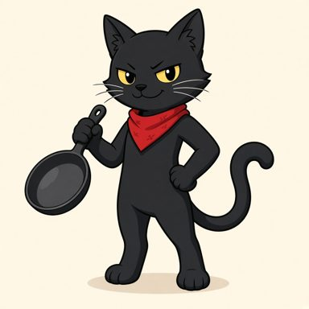

【警告】料理長が見回りに来たにゃ！
サボっている猫は急いで叩き起こすにゃ！
🐾 1 朝の定食屋
⏰ 90s
🔊
売上 / 目標
¥0
/ ¥9,500
評判:
★
★
★
🔪 切る
待ち: 0
🐾
猫をフリック！
空き
🍳 焼く
待ち: 0
🐾
猫をフリック！
空き
🍚 盛る
待ち: 0
🐾
猫をフリック！
空き
🛎️ 運ぶ
待ち: 0
🐾
猫をフリック！
空き
🐾 待機マット（休憩所）
持ち場へフリックして配置！
人手不足の食堂パニック
猫の手も借りたい



待機中の猫を指やマウスで
フリック（放り投げ）
して厨房へ！
猫は
サボる・寝る・飛び移る
など気まぐれ！クセを見極めて時間内に目標売上を達成しよう！
営業開始！
🐾
ステージ選択
ステージ選択
戻る
STAGE CLEAR!
営業終了！
★★★
本日の売上
¥0
目標売上
¥0
提供数
0皿
評判の残り
★3
トラのひとこと
「今日は腕が鳴ったにゃ！」
次のステージへ 🐾
もう一度挑戦
GAME OVER
営業失敗…
目標売上に届きませんでした…
売上
¥0
目標
¥0
リベンジする！ 🐾
ステージ選択